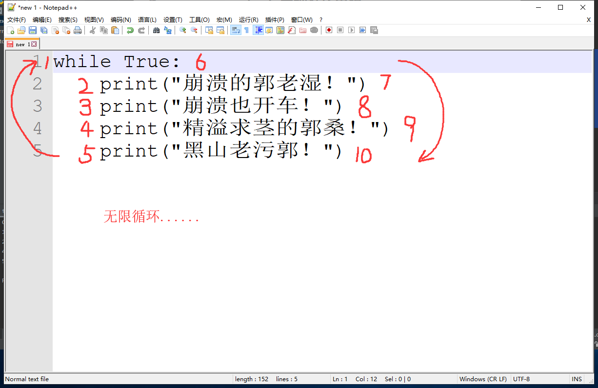
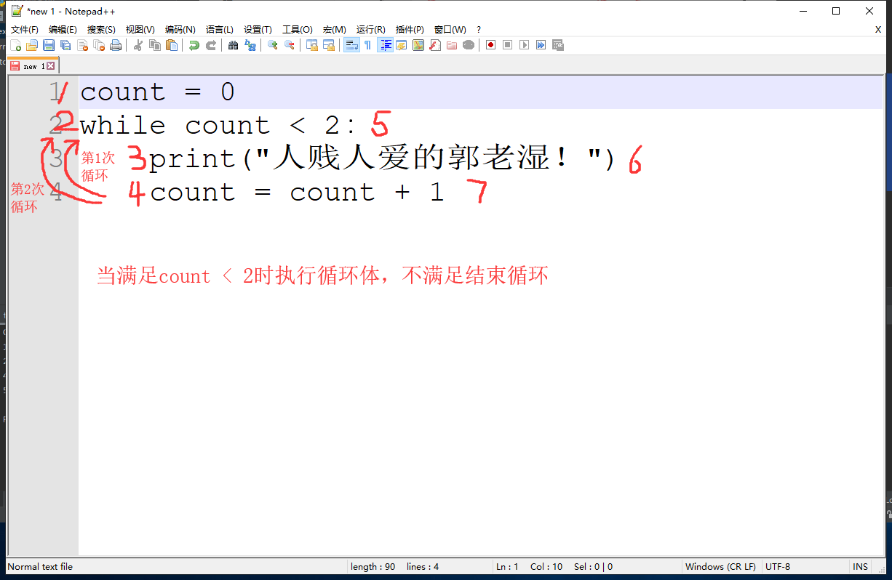

while condition：
循环体while condition:
循环体
else:
result死循环
while True:
print("崩溃的郭老湿！")
print("崩溃也开车！")
print("精溢求茎的郭桑！")
print("黑山老污郭！")
计数循环
count = 0
while count < 2:
print("人贱人爱的郭老湿！") # 打印三遍
count = count + 1
break
count = 0
while count < 5:
print("茎候佳阴的郭老湿！") # 打印三遍
count = count + 1
if count == 3:
break # 当count加到3的时候终止循环continue
count = 0
while count < 5:
if count == 2:
count = count + 1
continue
count = count + 1
print(str(count)+"粪发涂墙的郭老湿！")
# 当count等于3的时候跳出，继续下次循环while else 中 else下的代码块属于while
while循环结束后的代码块与while无关
count = 1
while count < 5:
print(count)
count = count + 1
if count == 3:
break
print("疯牛涕淌的郭老湿！") # break跳出执行count = 1
while count < 5:
print(count)
count = count + 1
if count == 3:
break
else:
print("疯牛涕淌的郭老湿！") # break跳出不执行break只终止当前循环，当break在内层while中，对外层while无影响
理解程序自上而下运行的机制
count_a = 0
count_b = 0
while count_a < 5:
print("a" + str(count_a), end=" ")
count_a += 1
while count_b < 3:
print("b" + str(count_b), end=" ")
count_b += 1
if count_b == 1:
break
输出结果：a0 b0 a1 b1 b2 a2 a3 a4
先看一个例子
*******info********
name:ZXD
age:23
sex:nan
hobby:年轻漂亮小姐姐
*******************
a = "*******info********"
b = "name:"
c = "age:"
d = "sex:"
e = "hobby:"
f = "*******************"
name = input("name:")
age = input("age:")
sex = input("sex:")
hobby = input("hobby:")
print(a)
print(b + name)
print(c + age)
print(d + sex)
print(e + hobby)
print(f)
name = input("name:")
age = input("age:")
sex = input("sex:")
hobby = input("hobby:")
info = '''*******info********
name:%s
age:%s
sex:%s
hobby:%s
*******************
'''
print(info % (name, age, sex, hobby))
name = input("name:")
age = input("age:")
sex = input("sex:")
hobby = input("hobby:")
info = f'''*******info********
name:{name}
age:{age}
sex:{sex}
hobby:{hobby}
*******************
'''
print(info)
格式化输出就是：可以利用固定的格式，需要变化的部分利用占位符占位，在%后按照占位顺序依次输入
格式化输出共有三种写法
md1 = "My name is %s, I'm %s years old." % (name, age)
md2 = f"My name is {name}, I'm {age} years old."
md3 = "My name is {}, I'm {} years old.".format(name, age)
转义符：两个相同的符号就是转义符，如 %%
t = "今日笔记完成进度为%d%%" % count # %% 代表 %
占位符类型
| > | 大于 |
|---|---|
| < | 小于 |
| >= | 大于等于 |
| <= | 小于等于 |
| == | 等于 |
| != | 不等于 |
| <> | 不等于(3.7版本以上) |
a = 10
b = 5
print(a > b) # True
print(a < b) # False
print(a >= b) # True
print(a <= b) # False
print(a == b) # False
print(a != b) # True
print(a <> b) # True
| + | 加 |
|---|---|
| - | 减 |
| ***** | 乘 |
| / | 除 |
| // | 整除（地板除） |
| ****** | 幂 |
| % | 模（取余） |
a = 4
b = 2
print(a + b) # 6
print(a - b) # 2
print(a * b) # 8
print(a / b) # 2
print(a // b) # 2
print(a ** b) # 16
print(a % b) # 0
| = | 等于 |
|---|---|
| += | 加等于 |
| -= | 减等于 |
| *= | 乘等于 |
| /= | 除等于 |
| //= | 整出等于 |
| ********=** | 幂等于 |
| %= | 模等于 |
a = 2
a += 2 # 等价于：a = a + 2
a -= 2 # 等价于：a = a - 2
a *= 2 # 等价于：a = a * 2
a /= 2 # 等价于：a = a / 2
a //= 2 # 等价于：a = a // 2
a **= 2 # 等价于：a = a ** 2
a %= 2 # 等价于：a = a % 2
| and | 与 |
|---|---|
| or | 或 |
| not | 非 |
2 or 8 # 2| in | 在 |
|---|---|
| not in | 不在 |
name = "ZXD"
print("ZXD" in name) # True
print("zxd" in name) # False